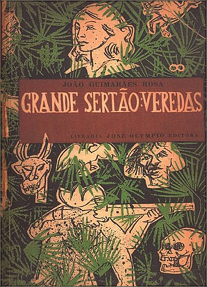
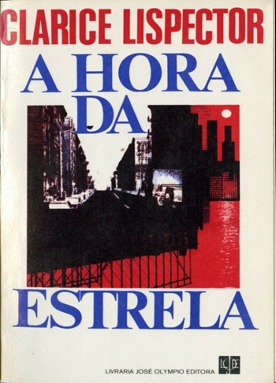
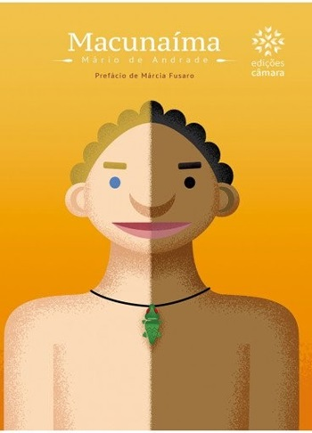
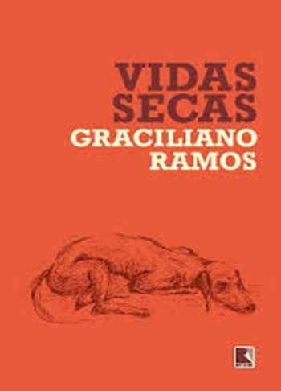
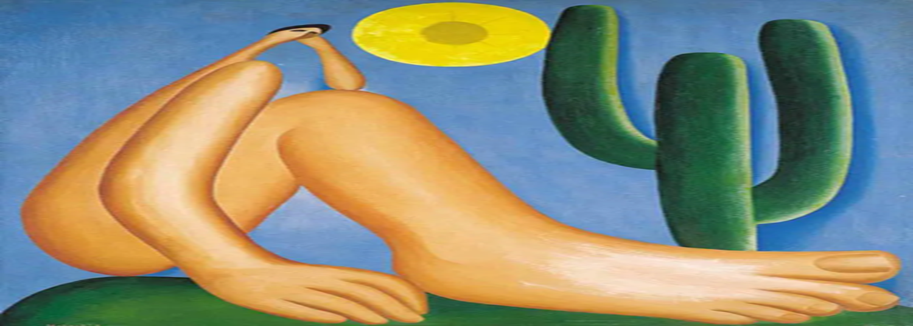

MODERNISMO
 O Modernismo, de 1922 a 1945, representa uma ruptura com as tradições anteriores e a busca por uma identidade nacional através da inovação estética e temática.
O modernismo foi fundamental para a formação da literatura e das artes brasileiras contemporâneas, promovendo uma nova visão estética e uma abordagem crítica da sociedade. Ele consolidou a identidade cultural do Brasil e abriu caminho para novas experimentações e vozes na arte.
/P>
O Modernismo, de 1922 a 1945, representa uma ruptura com as tradições anteriores e a busca por uma identidade nacional através da inovação estética e temática.
O modernismo foi fundamental para a formação da literatura e das artes brasileiras contemporâneas, promovendo uma nova visão estética e uma abordagem crítica da sociedade. Ele consolidou a identidade cultural do Brasil e abriu caminho para novas experimentações e vozes na arte.
/P>
CARACTERISTICAS
Ruptura com Tradições: O modernismo propôs uma ruptura com os estilos e normas anteriores, buscando novas formas de expressão artística.
Inovação Estética: Os autores experimentaram com a linguagem, formas e estruturas, incluindo a fragmentação e a mistura de gêneros.
Valorização da Cultura Nacional: Os modernistas buscaram inspiração nas raízes culturais brasileiras, incorporando elementos do folclore, da música popular e das diversas regiões do país.
Temáticas Urbanas e Sociais: Foco nas experiências da vida moderna, questões sociais e políticas, refletindo a realidade das cidades e das classes sociais.
Subjetivismo: A subjetividade e a individualidade do autor ganharam destaque, com ênfase nas emoções e percepções pessoais




FASES DO MODERNISMO
Primeira Fase (1922-1930): Caracterizada pela experimentação e busca de uma identidade nacional, com destaque para autores como Mário de Andrade e Manuel Bandeira.
Segunda Fase (1930-1945): Focada no realismo social e na crítica incisiva à sociedade, com representantes como Graciliano Ramos e Jorge Amado.
Terceira Fase (1945-1960): Influenciada pelo surrealismo e existencialismo, os autores exploram novas formas de expressão e questões filosóficas, com destaque para Clarice Lispector.
